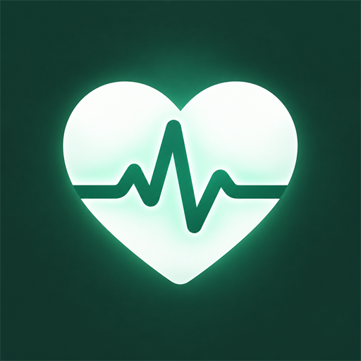
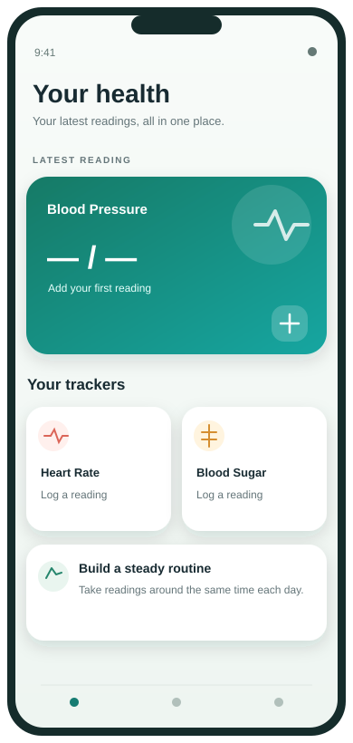
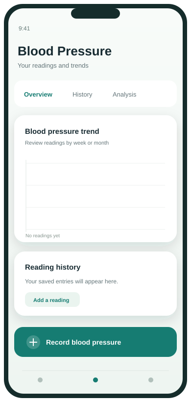
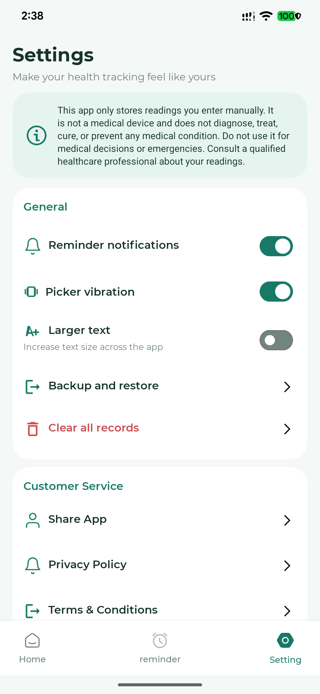

Track three readings
Record blood pressure, heart rate, and blood sugar manually, with notes when you need them.

Health Tracker:BP Monitor Appby MicroAppTechnologyHealth Tracker:BP Monitor App helps you manually record blood pressure, heart rate, and blood sugar, then explore your records in interactive charts.
For personal tracking and organization. Not for diagnosis or emergency care.

Keep your information organized, spot changes in your own history, and make it easier to stay consistent.
Record blood pressure, heart rate, and blood sugar manually, with notes when you need them.
Compare your saved readings in daily, weekly, and monthly charts, then review your history.
Choose a tracker, the days to repeat, and a reminder time on your device.
Adjust reminders, picker sound and vibration, text size, and language. Back up or restore your records in Settings.
Move from a simple home overview to a tracker’s saved history whenever you need it.
See your latest blood pressure reading and open the heart rate or blood sugar trackers. Charts show how your saved readings change over time.

Open a tracker to add a measurement and review entries and trends over time.

Adjust reminders, vibration, text size, and language; back up and restore your records from Settings.
The dashboard and chart visuals are illustrative. The Settings image is a real app screenshot; no health readings are shown.
You bring the measurement; Health Tracker:BP Monitor App gives you a place to keep and review it.
Use a suitable device or method outside the app and follow its instructions.
Record the value and any notes you want to remember, such as time or context.
Use your saved entries, charts and optional reminders to support conversations with your clinician.
The app stores the readings and details you enter locally. It does not require an online account. Backup files are saved where you choose and remain under your control.
See the full Privacy Policy →Questions? Contact MicroAppTechnology at microappstechnology@gmail.com.